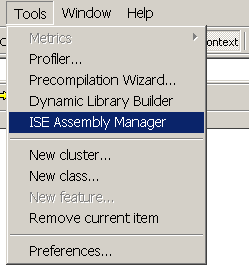
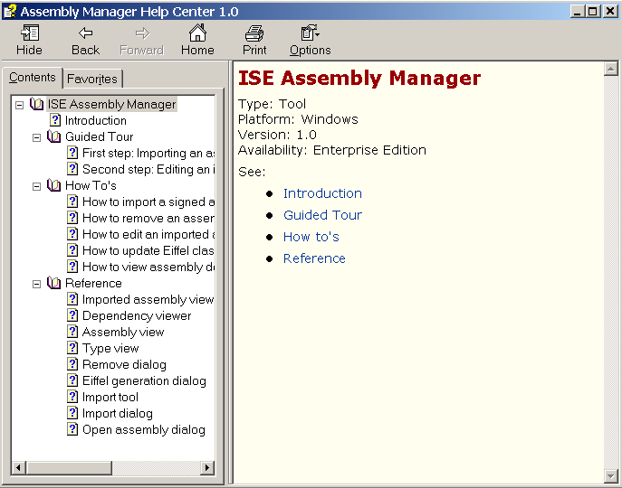

EiffelStudio gives you access to ISE Assembly Manager either through the following toolbar button:  or through the `Tools' menu:
or through the `Tools' menu:
To use the APIs of the Microsoft .NET framework in your Eiffel# systems, you need to emit the external Eiffel classes corresponding to these assemblies. ISE Assembly Manager provides you with a simple way to do this. The assembly you want to import must be signed.
Once you have imported the assemblies to the Eiffel assembly cache, ISE Assembly Manager gives you another powerful ability: edit types of the imported assemblies. Thus, you will be able to modify the automatically generated names of features and arguments to names that are more suitable. ISE Assembly Manager will check the consistency of your modifications before saving the changes and updating the corresponding Eiffel classes.
Since the importation time is quite long (a few minutes to up to twenty minutes for assemblies such as `System.Windows.Forms.dll', which have many dependencies), the most commonly used assemblies of the .NET framework are already imported to the Eiffel Assembly Cache in the delivery.
You can change the names of the features and arguments of pre-imported assemblies the same way you can edit assemblies you have imported yourself.
This section guides you through the powerful functionalities provided by ISE Assembly Manager.
|
EiffelStudio gives you access to ISE Assembly Manager either through the following toolbar button: |  |
|
ISE Assembly Manager comes out with the following screen, we called "Imported assembly viewer": |
|
|
|
The `File' menu provides you with another way to close ISE Assembly Manager by clicking on the `Exit' menu item. |
|
|
The first six menu items enable you to show new columns in the array. By default, only the assembly name and the path to Eiffel sources are visible. But you may want to see also the assembly version, culture and public key or assembly dependencies. That is the aim of these six items. The first six toolbar buttons give you the same opportunity: |
|
Here are some screenshots of the imported assembly viewer with different possible layouts: |

|

|
Note that when you click on `Show dependencies', a new column will be added to the initial array. But it will only show the names of dependencies. If you want some more precise information about them, just select `Dependency Viewer' in the `Tools' menu to open the dependency viewer and have a more complete view of each dependency.

This item (as well as the following toolbar button: ) gives you the ability to launch the dependency viewer, which lists all dependencies of the selected assembly.
) gives you the ability to launch the dependency viewer, which lists all dependencies of the selected assembly.
This item (as well as the following toolbar button: ) gives you access to the assembly view and then edit some types of your choice.
) gives you access to the assembly view and then edit some types of your choice.
This item (as well as the following toolbar button: ) opens the remove dialog, which enables you to remove assemblies from the Eiffel assembly cache.
) opens the remove dialog, which enables you to remove assemblies from the Eiffel assembly cache.
This item (as well as the following toolbar button: ) gives you access to the Eiffel generation dialog, which enables you to update the Eiffel sources corresponding to the selected assembly.
) gives you access to the Eiffel generation dialog, which enables you to update the Eiffel sources corresponding to the selected assembly.
This last item of the `Tool' menu (as well as the following toolbar button: ) gives you access to the import tool, which pretty looks like the imported assembly viewer but lists the shared assemblies from the Global Assembly Cache instead of the imported assemblies from the Eiffel assembly cache.
) gives you access to the import tool, which pretty looks like the imported assembly viewer but lists the shared assemblies from the Global Assembly Cache instead of the imported assemblies from the Eiffel assembly cache.

|
This item (as well as the toolbar button |
 |
|
This menu item gives you some general information about ISE Assembly Manager and the company Interactive Software Engineering, Inc. |
|
To import an assembly to the Eiffel assembly cache, you have to make sure the assembly is signed.
If your current screen is the imported assembly viewer (the first window when you launch ISE Assembly Manager), you first have to open the import tool by clicking on the following toolbar button or selecting the menu item `Import Tool' in the `Tools' menu.
Depending on the "kind" of assembly you want to import, you will follow two different schemes:
 or select the menu item `Import' in the `Tools' menu.
or select the menu item `Import' in the `Tools' menu. |
In both cases, the import dialog will appear and help you import the selected assembly to the Eiffel assembly cache. |
|
|
Click on the open toolbar button |
|
You just have to select the signed assembly you want to import and click on `Open' to open the import dialog, which will help you import the selected assembly to the Eiffel assembly cache.
Tip: The import dialog gives you the opportunity to import the dependencies together with the assembly. Not importing the dependencies may result in compilation errors, it is strongly recommended that you import all of the dependencies together with the assembly (only the dependencies that have not been imported yet are displayed).
|
To edit an imported assembly, your current screen has to be the imported assembly viewer, that is the window that appears when you launch ISE Assembly Manager. |
|
This class short form is editable: it gives you the opportunity to rename the name of each local feature and its arguments names.
Note: Only local features (i.e. first defined in the currently edited class) and its arguments names are editable. If you want to rename a feature, which is inherited (or an argument whose related feature is inherited) you have to switch to the parent class to change the feature name (or argument name).
When you open the type view (by clicking on the type Eiffel name in the assembly view), the text field with name of the first feature of the class is automatically selected. You just have to type the new feature name.
To rename a feature argument, just give the focus to the text field you want to edit (by clicking with the mouse) and type the new argument name.
ISE Assembly Manager first checks that your changes are consistent before saving them. In case problems are detected, the list of errors appears at the bottom of the type view. When you click on an error message, the focus is given to the corresponding text field, inviting you to modify it.
When all changes are correct, ISE Assembly Manager saves changes and updates the Eiffel class (and its children if any).
Note: Even if you do not want to rename class features or arguments, you always have the opportunity to update the Eiffel classes corresponding to any imported assemblies through the Eiffel generation dialog accessible from the imported assembly viewer. This may be useful in case you mistakenly deleted the folder containing the Eiffel classes.
|
To remove an assembly from the Eiffel assembly cache, your current screen has to be the imported assembly viewer, that is the window that appears when you launch ISE Assembly Manager. |
|
Note: When you decide to remove an assembly (and possibly its dependencies), you must keep in mind that assembly removal is a one-way process: the only way to "undo" it is to import the assembly again through the import tool. But this may take quite a long time. Therefore it is strongly advised not to remove the assembly dependencies that you may need in another Eiffel# system.


 ) opens the help topics about ISE Assembly Manager:
) opens the help topics about ISE Assembly Manager:


 or select the menu item `Open Assembly' in the `File' menu. In both cases, the
or select the menu item `Open Assembly' in the `File' menu. In both cases, the